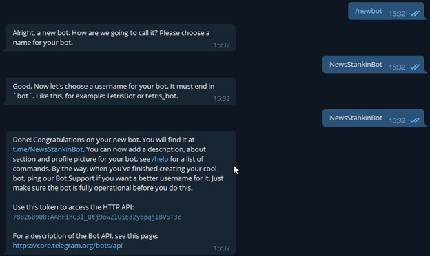
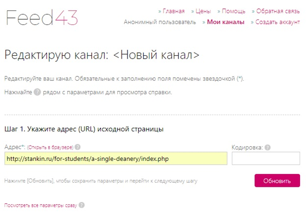
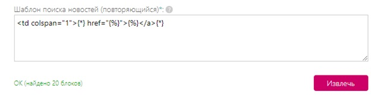
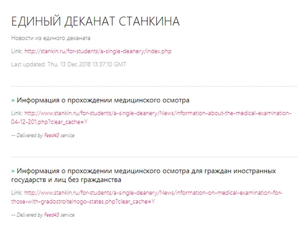
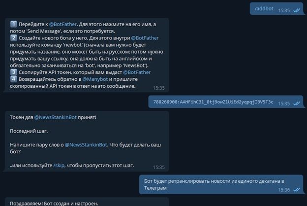
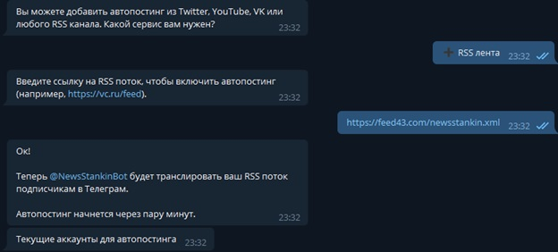
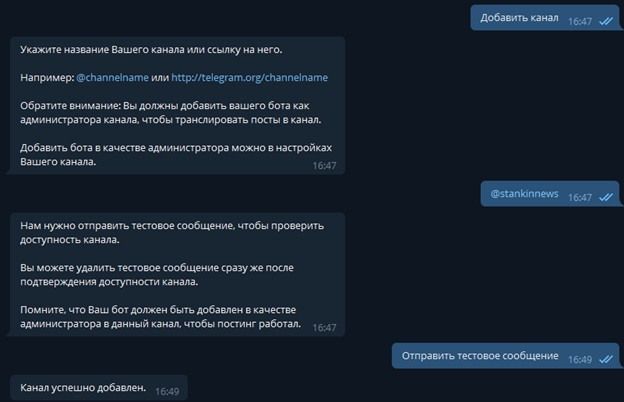

- Личный репозиторий
- Репозиторий группы
- Репозиторий курса
- Экзаменационные билеты
- Единый деканат
Учебный график
Срок 1-го модуля 22.10-04.11 Срок 2-го модуля 10.12-23.12 Срок сдачи зачетов и практик до 30.12 Экзаменнационная сессия с 31.12 по 20.01
Лабораторная работа №2: "Разработка простого веб-приложения"
Целью Лабораторной работы №2 является создание простого веб-приложения. Было решено создать Telegram-бота, который в удобной форме доставлял бы информацию из деканата университета до конечного пользователя (студентов).
Задачи, которые необходимо было решить, для достижения цели:
1. Зарегистрировать Telegram-бота с помощью @BotFather.
2. Адаптировать ленту новостей единого деканата под RSS-формат.
3. Настроить функционал созданного Telegram-бота при помощи @Manybot.
4. Подсоединить адаптированный вариант новостей университета к Telegram-боту.
5. Подключить бота к Telegram-каналу для удобного взаимодействия с ним студентов.
Процесс выполнения задач можно наблюдать в скриншотах ниже.
1. В первом пункте не наблюдалось ничего сложного. На скриншоте показано взаимодействие с @BotFather (скриншот 1).
Скриншот 1

2. Для адаптирования ленты новостей единого деканата под RSS-формат был использован сервис Feed43.com (скриншот 2), который позволил проанализировать HTML-код сайта stankin.ru и преобразовать его (скриншот 3) под формат (скриншот 4), который бы легко воспринял Telegram-бот (скриншот 5).
Скриншот 2

Скриншот 3

Скриншот 4

Скриншот 5

3. Настройка функционала Telegram-бота (скриншот 6).
Скриншот 6

4. Подсоединение обновлённой ленты новостей к Telegram-боту (скриншот 7).
Скриншот 7

5. Добавление бота на Telegram-канал (скриншот 8).
Скриншот 8
